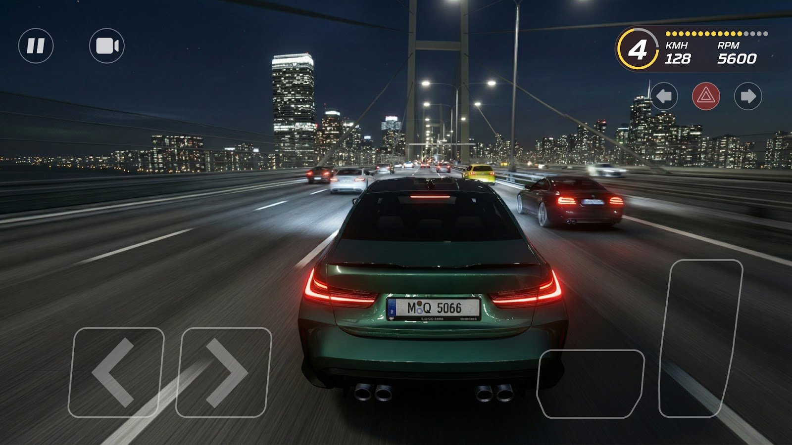
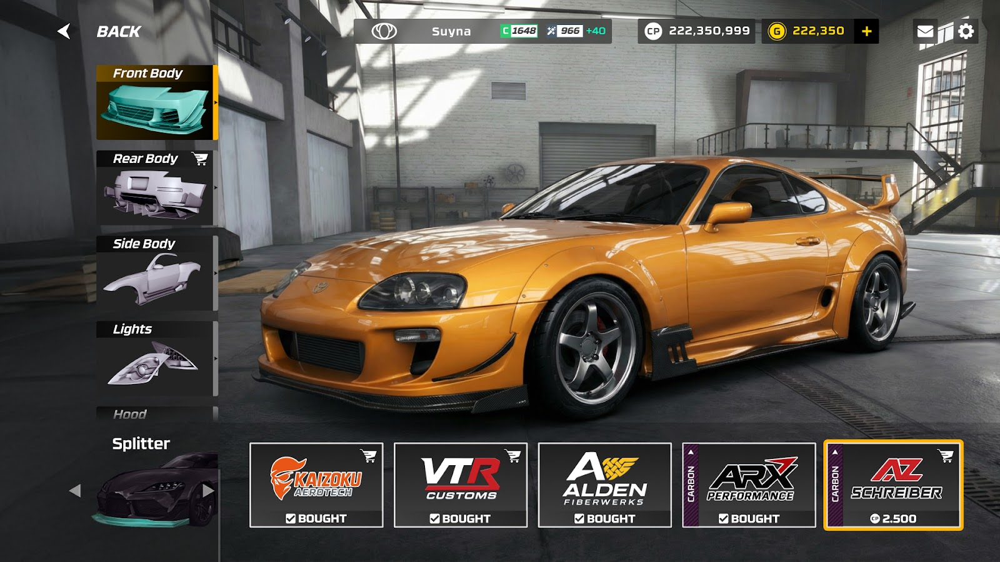
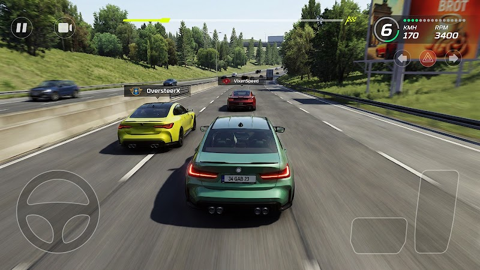

Spektra Games, 2025–2026
Highway Racer Pro
A realistic highway traffic racer that launched to #1 in Racing on the US App Store and stayed the category’s most-downloaded title.
What it is
Highway Racer Pro is a traffic racer: you drive real cars through live highway traffic on routes modelled on Japan, Germany, Brazil and the USA, racing other players in real time.
It launched in May 2025 to #1 in Racing on the US App Store and topped the charts in 45+ countries, on 350,000 pre-registrations and no paid marketing. I started it with the CTO as one of its first two engineers and stayed with it through launch and live operation.
What I built
- Started the project with the CTO as one of its first two engineers, the only two on it for around six months, and worked across effectively every system through launch and live operation.
- Set the architecture, documentation and review standards for the codebase.
- Built the modular vehicle physics components behind the game’s driving feel, plus the highway traffic simulation and racing AI.
- Built an internal profiling tool that auto-captures memory and performance traces from scripted scenarios and runs AI analysis over them, surfacing regressions unattended.
- Built a native iOS and Android plugin exposing home-screen quick actions and app shortcuts into Unity.
- Designed the case study and ran the technical interviews for the two engineers who joined, growing the team to four.

Customization at scale
The customization system spans 45+ vehicles, each with 60+ part categories, 4+ parts per category and five LODs per part — all authored inside a single vehicle FBX. I extracted those parts and their LODs into Addressables groups tuned by packing option and label, so only what a scene actually needs reaches memory.
In game

How it landed
Highway Racer Pro launched to #1 in Racing on the US App Store and topped the charts in 45+ countries, on 350,000+ pre-registrations and no paid marketing. It has been the category’s most-downloaded title on the US App Store since, and Apple featured it in a “Games We Love” editorial story.
Players make their own content about it — the clip below is a driving video by CouchCommander.